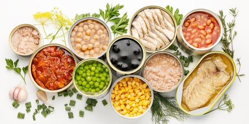

Estamos de volta !
Na última aula, você utilizou um aplicativo para verificar como está sua alimentação. Com ele, foi possível observar a quantidade de calorias e nutrientes ingeridos.
Dúvida
Sobre a atividade da aula passada, responda:
Você reparou se alguns dos alimentos consumidos eram ricos em gorduras ruins, ou mesmo cheios de outras substâncias que não agregam um bom valor nutricional?
Acredito que, se você comeu muitos biscoitos (ou bolachas?), doces, macarrões instantâneos, salgadinhos, entre outros produtos semelhantes, você chegou a valores elevados de nutrientes que devem ser consumidos com cuidado, certo?
Sim!
Na nossa alimentação, comer pouco ou muito não é tudo; o tipo de alimento também determina se a nossa alimentação será saudável ou não.
Nesta aula
Discutiremos os tipos de alimentos que consumimos no dia a dia.

Tipos de alimento!
Separaremos os alimentos em quatro tipos, de acordo com o tipo de processamento sofrido por cada um deles antes de chegar às nossas mesas.
Para começar...
Vamos falar sobre os alimentos in natura
ou minimamente processados.
Alimentos processados
-
Quais são os alimentos processados?
São alimentos in natura ou minimamente processados que recebem, em geral, açúcar, sal, ou óleo. Pode-se dizer que são versões modificadas do produto original.
-

Exemplos
Como exemplo, podemos citar as geleias de frutas, queijos, pães e conservas de legumes.
-
As alterações aumentam a durabilidade do alimento, mas alteram negativamente a composição nutricional do alimento, aumentando a quantidade de açúcares e lipídios, além do valor calórico.
Alimentos ultraprocessados
Para começar, deixo uma mensagem:
EVITE ALIMENTOS ULTRAPROCESSADOS
Como escolher o alimento?

Dica 01
Se não puder consumir o alimento in natura ou minimamente processado, observe o rótulo do alimento e procure aquele que tenha o menor número de substâncias adicionadas, além daquelas que formam o alimento.
Dica 02
Por exemplo, um iogurte natural é composto basicamente por leite e fermento. Escolha sempre o iogurte que contenha somente estes dois ingredientes. No mercado, há muitos que apresentam várias substâncias como amido, xarope de açúcar, entre outras, o que faz com que sejam menos saudáveis que aqueles compostos apenas pelos ingredientes principais.
O que rolou nesta aula?
Descobrimos como os alimentos são alterados e como isso interfere em nossa saúde e na durabilidade deles.
É hora da reflexão...
1. Você costuma consumir mais produtos processados ou in natura?
2. Você verifica a quantidade de substâncias em seu alimento?
3. Como é a sua relação com os produtos ultraprocessados? Como você os consome?
Na próxima aula...
Falaremos sobre as doenças relacionadas à má alimentação, e aquelas que restringem nossa alimentação.